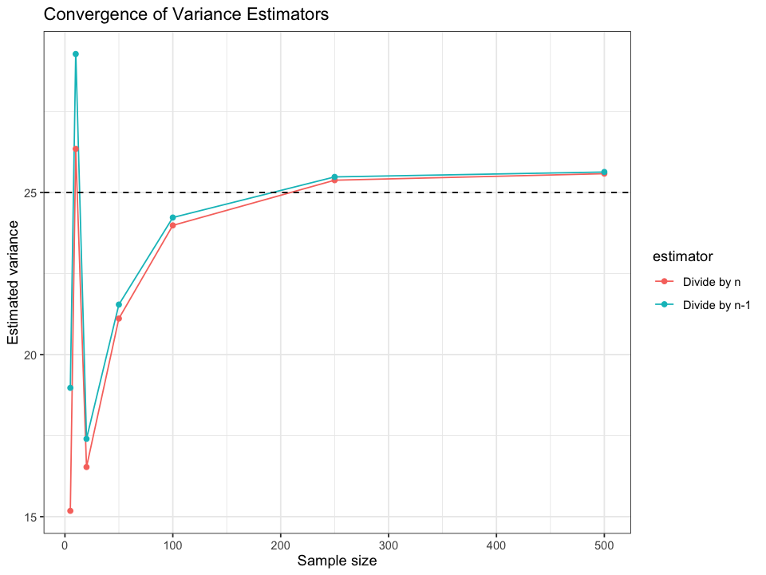
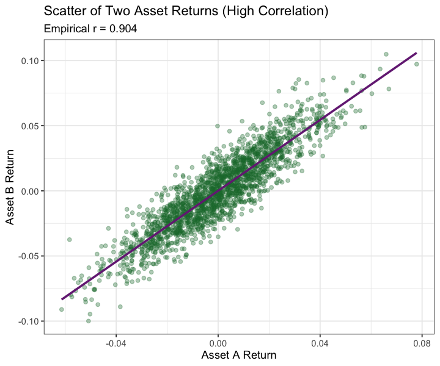

# ---- Data generation ----skewed_sample <-rlnorm(1000, meanlog =2, sdlog =0.5) # log-normal (positively skewed)normal_sample <-rnorm(1000, mean =20, sd =5)cat('Preview: first 6 rows of skewed (right-tailed) vs approximately normal sample.\n')head(data.frame(skewed_sample, normal_sample))
Preview: first 6 rows of skewed (right-tailed) vs approximately normal sample.
Comparison of key statistics: note higher skewness & kurtosis for log-normal sample.
A data.frame: 2 × 7
distribution
n
mean
sd
var
skewness
kurtosis
<chr>
<int>
<dbl>
<dbl>
<dbl>
<dbl>
<dbl>
skewed
1000
8.428385
4.496494
20.21846
1.64801605
7.072802
normal
1000
20.221132
5.043640
25.43830
-0.01362832
2.942717
# ---- Visualization: Histograms ----combined <-rbind(data.frame(value = skewed_sample, type ="Skewed (Log-normal)"),data.frame(value = normal_sample, type ="Approx. Normal"))options(repr.plot.width =13, repr.plot.height =6)ggplot(combined, aes(value)) +geom_histogram(bins =40, fill ="#3182bd", alpha =0.8, color ="white") +facet_wrap(~ type, scales ="free", nrow =1) +labs(title ="Distribution Contrast", x ="Value", y ="Count") +theme(panel.spacing.x =unit(1.2, "lines"))
# ---- Covariance & Correlation example ----# Suppose revenue depends on marketing spend with noisemarketing_spend <-rnorm(100, mean =50, sd =10)revenue <-5+1.8* marketing_spend +rnorm(100, sd =15)cat('Covariance & correlation between marketing spend and revenue (positive association expected).\n')summary_df <-data.frame(cov =cov(marketing_spend, revenue), cor =cor(marketing_spend, revenue))summary_df
Covariance & correlation between marketing spend and revenue (positive association expected).
A data.frame: 1 × 2
cov
cor
<dbl>
<dbl>
149.4054
0.7856426
# ---- Simulation: Sample vs Population variance ----true_var <-25# sd^2 with sd=5sample_sizes <-c(5, 10, 20, 50, 100, 250, 500)results <-lapply(sample_sizes, function(n){ x <-rnorm(n, mean =0, sd =5)data.frame(n = n, var_n =mean((x -mean(x))^2), var_n1 =var(x))}) %>% dplyr::bind_rows()cat('Variance estimators: var_n (biased, divide by n) vs var_n1 (unbiased, divide by n-1).\n')results
Variance estimators: var_n (biased, divide by n) vs var_n1 (unbiased, divide by n-1).
A data.frame: 7 × 3
n
var_n
var_n1
<dbl>
<dbl>
<dbl>
5
15.17886
18.97357
10
26.34624
29.27360
20
16.53123
17.40129
50
21.11229
21.54315
100
23.98626
24.22854
250
25.38000
25.48193
500
25.58307
25.63434
# ---- Plot: Convergence of variance estimators ----results_long <- results %>% tidyr::pivot_longer(var_n:var_n1, names_to ="estimator", values_to ="value") %>% dplyr::mutate(estimator = dplyr::recode(estimator, var_n ="Divide by n", var_n1 ="Divide by n-1"))options(repr.plot.width =8, repr.plot.height =6)ggplot(results_long, aes(n, value, color = estimator)) +geom_line() +geom_point() +geom_hline(yintercept = true_var, linetype ="dashed") +labs(title ="Convergence of Variance Estimators", y ="Estimated variance", x ="Sample size")

Sampling Distributions of Two Asset Returns
We will simulate repeated samples of two (correlated) asset return series and compare the sampling distributions of their sample means and the distribution of the portfolio mean (equal weights).
# ---- Stretch: demonstrate high correlation ----# Single large sample to visualize relationshipN_demo <-2000Z_demo <-matrix(rnorm(2*N_demo), N_demo, 2) %*% BX_demo <-sweep(Z_demo, 2, mu, "+")assetA_demo <- X_demo[,1]assetB_demo <- X_demo[,2]emp_cor <-cor(assetA_demo, assetB_demo)cat(sprintf('Empirical correlation from demo sample: %.3f (target rho = %.2f)\n', emp_cor, rho))options(repr.plot.width =6, repr.plot.height =5)ggplot(data.frame(assetA_demo, assetB_demo), aes(assetA_demo, assetB_demo)) +geom_point(alpha =0.35, color ='#1b7837') +geom_smooth(method='lm', se=FALSE, color='#762a83') +labs(title ='Scatter of Two Asset Returns (High Correlation)', x='Asset A Return', y='Asset B Return',subtitle =paste0('Empirical r = ', round(emp_cor,3)))
Empirical correlation from demo sample: 0.904 (target rho = 0.90)
`geom_smooth()` using formula = 'y ~ x'

Reflection
How does correlation between assets influence the portfolio mean’s variability? Write 3–4 sentences interpreting for a diversified vs concentrated investment decision.